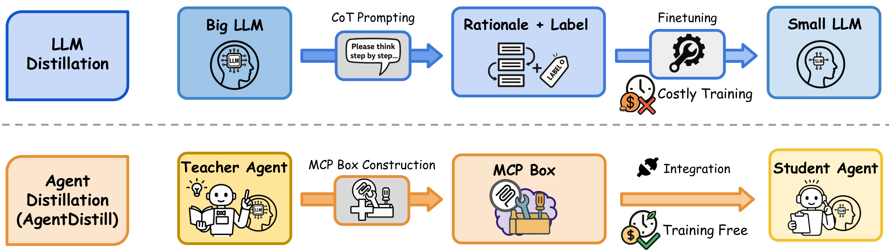
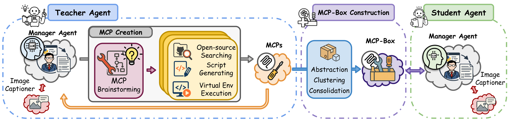
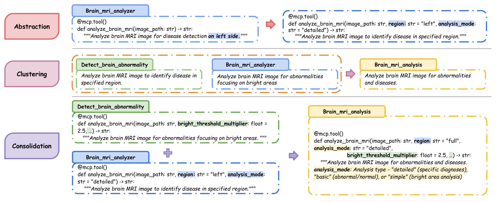
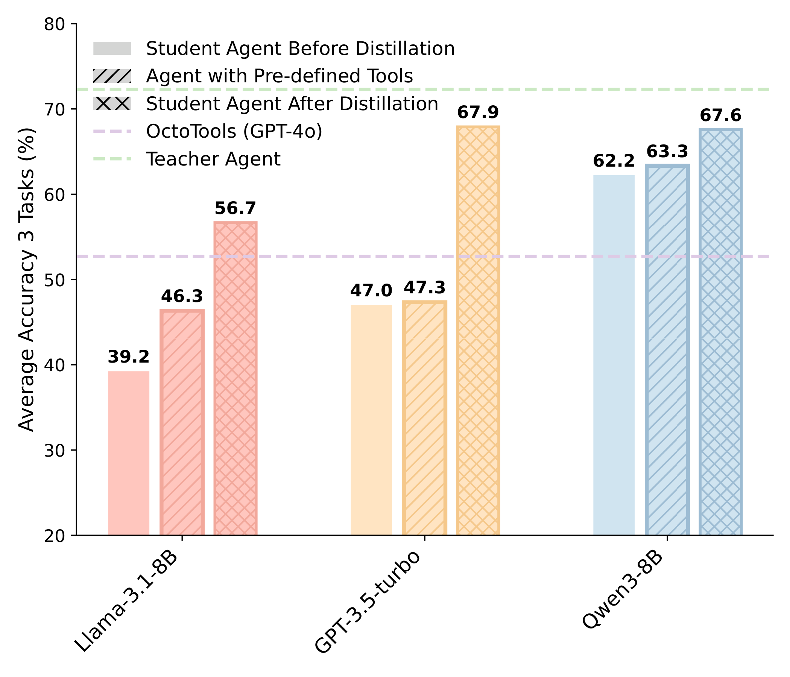

AgentDistill：用可复用 MCP Box 实现「免训练」的 agent 蒸馏
AgentDistill: Training-Free Agent Distillation with Generalizable MCP Boxes
①开源贡献 Open-source Artifacts
本文的核心产出是方法 / pipeline 本身，而非一套打包发布的模型或数据集。论文正文与首页脚注没有给出 AgentDistill 自己的 GitHub 仓库或项目主页链接；截至解读日（2026-05-30），通过 WebSearch、GitHub 仓库检索均未能定位到官方代码仓库，故标注为「未见」。论文真正依赖、且可独立核实的，是它所站立其上的第三方框架与公开数据集（SmolAgents、OctoTools、24-game、PathVQA、SLAKE），这些并非 AgentDistill 团队的发布物。下表如实区分二者。
| 类型 | 是否开源 | 内容 / 链接 |
|---|---|---|
| AgentDistill 代码 Code | ✘ 未见 | 论文未提供官方仓库；解读日检索未找到。若后续放出应以作者官方为准。 |
| 模型权重 Weights | ✘ 不适用 | 方法为 training-free，不产生新权重；student 直接用现成的 GPT-3.5-turbo / Qwen3-8B / LLaMA3.1-8B。 |
| 产物 MCP-Box | ✘ 未单独发布 | MCP-Box 是 teacher 在各数据集上自动生成的 FastMCP 风格 Python 工具集合（PathVQA 9 个、SLAKE 13 个、Game of 24 1 个），论文未附下载。 |
| 所依赖框架（第三方） | ✔ | agent 搭建在 SmolAgents 之上：github.com/huggingface/smolagents（ref [48]）；baseline 工具系统为 OctoTools（ref [52]，arXiv:2502.11271）。 |
| 评测数据集（第三方） | ✔ | Game of 24：huggingface.co/datasets/nlile/24-game（ref [49]）；PathVQA（ref [50]）、SLAKE（ref [51]）为公开医学 VQA 数据集。 |
②研究动机与贡献 Motivation & Contribution
背景与问题
把大模型的能力蒸馏到小模型，对纯 LLM 已经很成熟：从 logits 对齐（Hinton 等）、hidden feature 对齐（DistilBERT、PKD、TinyBERT）、attention 对齐（MiniLM），到 chain-of-thought distillation（CoTD）让 student 复现 teacher 的 step-by-step rationale。但当对象变成 LLM-based agent——会 planning、用 memory、调 tool、与环境交互的系统——蒸馏就棘手得多，因为要迁移的不再只是「答案/中间推理」，还包括 tool 使用方式和任务分解策略。
论文把已有 agent 蒸馏归为两类，并指出各自的具体失败模式：
- Trajectory（轨迹）蒸馏：如 Structured Agent Distillation (SAD)、把 LLM agent 蒸进小模型的检索/代码工具方法。它们把 teacher 的「思考 + tool 调用」交织轨迹当作监督信号，让 student 一步步模仿。问题是：(1) 计算成本高——teacher 要产出并处理很长很复杂的序列；(2) 泛化差——student 被动复制固定轨迹，到了新环境不会自适应。
- Structure（结构）蒸馏：如 MAGDi（把多 agent 对话编码成 interaction graph）、Sub-goal Distillation（抽取高层子目标序列）。它们比轨迹蒸馏高效，用抽象的 teacher 策略引导 student，但忽视了 teacher 与 student 在模型能力、知识边界、可用 tool 上的差异——把强模型的策略硬塞给弱模型，未必接得住。
共同痛点：要么贵、要么不灵活，而且都假定「student 能执行 teacher 定义的计划」。
本文的切入点
作者的关键观察是：teacher agent 真正值钱、可迁移的产物，不是它走过的那条具体轨迹，而是它在解题过程中「随手造出来的工具」。如果把这些工具抽象成标准化、自包含、可参数化的 MCP（Model–Context–Protocol，Anthropic 提出的把上下文/工具以统一协议提供给 LLM 的开放规范），那么这些 MCP 就成了「凝固下来的解题能力」——student 不需要学会怎么写这段代码，只要在合适的时候调用它即可。于是蒸馏的载体从「行为序列」变成「工具库」：把繁重的 low-level 代码生成挪到 teacher 离线完成，student 只保留它本来就该做的 high-level planning（决定是否调、调哪个、怎么填参数）。这也天然 training-free——没有 gradient，只是换了工具接口。
核心贡献
- 提出 AgentDistill：一种让 student agent 直接继承 teacher 生成的模块化、可迁移、可解释组件（MCP）的新 agent 蒸馏框架；区别于「replay 长动作序列」的前作，student 是直接继承解题能力而非模仿轨迹。
- 完全 training-free：teacher 与 student 都不微调，MCP 自动抽取 → 抽象 → 复用，无 gradient update、无手工造工具，得到一条高性价比、可部署、对未见任务泛化的蒸馏 pipeline。
- 在 biomedical（PathVQA、SLAKE）与 mathematical（Game of 24）benchmark 上验证：对 GPT-3.5-turbo、Qwen3-8B、LLaMA3.1-8B 三种 student 一致显著提升（见 Table 2），并把 student 平均表现拉近到 teacher、超过 OctoTools (GPT-4o)。

③方法 Method
整体流程分三段（见图 2）：(A) MCP Creation——teacher agent 解题时由 Manager Agent 分解任务、对需要工具的子任务调用 MCP Creation Module，经「open-source 检索 → 脚本生成 → 虚拟环境执行」产出一批自包含 MCP；(B) MCP-Box Construction——把这些原始 MCP 经 abstraction / clustering / consolidation 整理成紧凑、可复用的 MCP-Box；(C) Student Inference——推理时把整个 MCP-Box 挂进小模型 student 的 tool 接口，student 像平常一样推理并按需调用工具，全程不更新参数。

问题形式化
给定监督样本 $\mathcal{D}=\{(x_i,y_i)\}_{i=1}^{N}$ 和 teacher agent $\pi_T$，目标是把 teacher 生成的 MCP 蒸馏成一个自包含的 MCP-Box，用它来提升小模型 student agent $\pi_S$。关键约束是 student 不做任何梯度更新：
$$\nabla_\theta \pi_S = 0.$$形式上把它写成一个「在 MCP 空间里选盒子」的优化问题：
$$\max_{\mathcal{B}\subset\mathcal{L}}\ \mathbb{E}_{(x,y)\sim\mathcal{D}}\big[\mathbb{I}\{\pi_S(x;\mathcal{B})=y\}\big],$$其中 $\mathcal{L}$ 是所有 teacher 生成 MCP 的集合，$\mathcal{B}$ 是从 $\mathcal{L}$ 蒸馏出的 MCP-Box，$\pi_S(x;\mathcal{B})$ 表示 student 在输入 $x$、并被 MCP-Box $\mathcal{B}$ 增强后的输出；指示函数 $\mathbb{I}\{\cdot\}$ 在 student 答对时取 1。直觉：不动 student 的权重，只通过「给它配一套什么样的工具」来最大化答对率。
(A) MCP Creation —— teacher 边解题边造工具
teacher $\pi_T$ 与环境 $\mathcal{E}$ 交互，对样本 $x_i$ 产生一条完整轨迹
$$\tau_i=(r_1,a_1,o_1,\dots,r_{L_i},a_{L_i},o_{L_i}),$$其中 $r_t$ 是 reasoning token，$a_t$ 是 action token（如 tool 调用、MCP 生成），$o_t$ 是来自环境的 observation。论文特意 prompt teacher 在推理过程中把结构化、自包含的 MCP 与普通 reasoning 分离开地生成；一条轨迹可对应多个子任务、产出多个 MCP。若 teacher 在第 $j$ 步生成一个 MCP，记为 $\mathrm{MCP}_{i,j}\in\mathcal{L}$。
只保留成功轨迹：仅当 $\pi_T(x_i)=y_i$（teacher 答对）时其 MCP 才进入候选池；且要求该 MCP 片段语法正确且可执行，才收进临时池 $\mathcal{L}=\{\mathrm{MCP}_{i,j}\}$。这个池子「丰富但 noisy」，下一步再清洗。teacher 结构上很精简——只有三个模块：Manager Agent（中枢：分解任务、判断要不要外部工具、把子任务结果汇总成最终答案）、Basic Image Captioner（把图像转成文字摘要，让纯文本模型也能处理多模态输入，是医学 VQA 的关键）、MCP Creation Module（内含 MCP Brainstorming → Open-Source Searching → Script Generation → Virtual Env Execution 四段，把概念计划落地成经过验证的可执行脚本）。
(B) MCP-Box Construction —— 抽象 / 聚类 / 合并
把成功轨迹里收集的所有 MCP 交给一个高容量 instruction-tuned LLM（如 Claude-Sonnet-4）整理成紧凑仓库 MCP-Box，三步走：
(1) Abstraction（抽象）：对每个工具相关的 MCP 片段，抽出相关 Python 代码，prompt LLM 改写成「可复用、参数化、与具体样例无关」的形式：
$$\hat{\mathrm{MCP}}_{i,j}=\mathrm{LLM}_{\text{abstract}}(\mathrm{MCP}_{i,j}).$$目标是去掉样例特定的措辞、保留可泛化的 tool-use 策略；过程中最多暴露 三个关键参数为可配置，同时保留工具核心逻辑。
(2) Clustering（聚类）：把所有抽象后的 $\hat{\mathrm{MCP}}_{i,j}$ 按功能用一个 code-level 聚类 prompt 分组，LLM 依据「共享的应用语义」给出簇划分：
$$\mathcal{C}=\mathrm{LLM}_{\text{cluster}}\big(\{\hat{\mathrm{MCP}}_{i,j}\}\big),$$每个簇 $\mathcal{C}_k$ 对应一个功能组，例如 "image utils" 或 "numeric analysis"。
(3) Consolidation（合并）：在每个簇内，让 LLM 把多个工具实现合并成单一通用版本——做参数统一、加输入校验、补文档：
$$\mathrm{MCP}^{\text{final}}_k=\mathrm{LLM}_{\text{consolidate}}\big(\{\hat{\mathrm{MCP}}_{i,j}\mid \hat{\mathrm{MCP}}_{i,j}\in\mathcal{C}_k\}\big).$$每个输出是一份 production-ready、兼容 FastMCP 的 Python 文件。最终 MCP-Box 定义为
$$\mathcal{B}=\big\{(\mathrm{MCP}^{\text{final}}_k,\ \text{cluster\_name}_k)\big\}_{k=1}^{K},$$每项含一个合并后的 tool protocol 及其功能标签。

region、analysis_mode、bright_threshold_multiplier）的通用 MCP（黄），并兼容 FastMCP 执行（出处：原文 Figure 4）。(C) Student Inference —— 直接挂载，不学习
基于 SmolAgents 框架，把整个 MCP-Box $\mathcal{B}$ 在推理时挂进 student 的 tool 接口——不做 retrieval、reranking 或参数预选。每个 $\mathrm{MCP}^{\text{final}}_k$ 被实现成一个带标准输入/输出接口的可调用工具（FastMCP runtime 里用 @mcp.tool() 装饰）。student $\pi_S$ 是 frozen policy，$\nabla_\theta\pi_S=0$。面对新问题 $x$ 时，student 照常生成中间推理与 tool 调用：每一步 runtime 把 $\mathcal{B}$ 里所有工具暴露为可调用模块，agent 决定调不调、调哪个、怎么填参（文本生成或 function-call 模板），拿到返回值 $o_t$ 再更新上下文。所有 tool-use 能力都被预先编译进 MCP-Box，student 零额外训练即可受益——这让 student 保持轻量、推理高效，同时把工具相关的解题能力整体转移进「工具库」本身。
- teacher = Claude-Sonnet-4（Manager）+ GPT-4o（MCP Creation Module）；student = GPT-3.5-turbo / Qwen3-8B / LLaMA3.1-8B，均 frozen、无任务微调。
- 三步全靠 prompt 驱动一个高容量 LLM 完成（abstraction/clustering/consolidation 各一个 prompt），没有训练环节；抽象阶段「最多暴露 3 个参数」是控制工具复杂度、保泛化的刻意设计。
- 只用成功轨迹（teacher 答对）且 MCP 必须可执行，才进候选池——保证盒子里是「functional、verified」的工具。
- 每个数据集单独构建一个 MCP-Box：构建集与 OctoTools 一致，从各数据集 validation set 采样 100 条样本喂给 teacher 生成 MCP；产出的盒子大小差异很大（Game of 24 仅 1 个工具，SLAKE 13 个）。
- 多模态输入靠 Basic Image Captioner 先转文字，使纯文本小模型也能处理 PathVQA / SLAKE 的图像。
④实验评估 Evaluation
评测设置
- Benchmark / 数据集：
- Game of 24（数学）：1,362 道题，每题给 4 个数，用四则运算凑出 24，按人类难度分级，至少有一个合法解——考察严格约束下的符号算术。
- PathVQA（医学 VQA）：4,998 张病理图像、32,000 个问题，强调组织病理上的细粒度视觉推理（识别细胞类型、诊断标记等）。
- SLAKE（医学 VQA）：642 张放射影像、14,000+ 专家标注 QA 对，双语，考察视觉理解 + 医学知识检索。
- 对比基线（5 种设定）：(1) 蒸馏前的 student（无 MCP-Box）；(2) 配预定义工具的 agent（OctoTools 框架 + 各任务对应工具）；(3) 蒸馏后的 student（挂 MCP-Box）；(4) teacher agent（Claude-4 + GPT-4o，上界参照）；(5) 用 GPT-4o 驱动的 OctoTools。
- 评价指标 Metric：task accuracy（答对题目的百分比，越高越好）；并报告相对蒸馏前的绝对提升。所有模型均 frozen、无微调。
主要结果：MCP-Box 一致提升 student（Table 2）
| 数据集 | Student（base model） | 蒸馏前 (%) | 蒸馏后 (%) | 提升 |
|---|---|---|---|---|
| PathVQA | GPT-3.5-turbo | 45.7 | 52.7 | +7.0 |
| Qwen3-8B | 53.0 | 55.3 | +2.3 | |
| LLaMA3.1-8B | 46.7 | 50.0 | +3.3 | |
| SLAKE | GPT-3.5-turbo | 61.0 | 68.3 | +7.3 |
| Qwen3-8B | 61.0 | 67.7 | +6.7 | |
| LLaMA3.1-8B | 49.3 | 59.3 | +10.0 | |
| Game of 24 | GPT-3.5-turbo | 34.3 | 82.7 | +48.4 |
| Qwen3-8B | 72.7 | 79.7 | +7.0 | |
| LLaMA3.1-8B | 21.7 | 64.0 | +42.3 |
解读：提升在所有模型 × 所有数据集上一致为正。增益大小有明显规律——越弱、越吃工具的设定，提升越夸张：Game of 24 这类纯符号算术对小模型最难，GPT-3.5-turbo +48.4、LLaMA3.1-8B +42.3；而本就强的 Qwen3-8B 在 Game of 24 只 +7.0（接近天花板）。SLAKE 提升最稳（LLaMA3.1-8B 高达 +10.0），说明语义丰富的视觉问答能受益于 MCP 的组合式结构；PathVQA 提升温和但稳定（+2.3~+7.0），体现 MCP 的广泛适用性。
逼近 teacher、并超过检索式工具系统（Table 3）
| 数据集 | OctoTools (GPT-4o) | 配预定义工具 agent（sLM 均值） | Teacher (Claude-4+GPT-4o) | 蒸馏后 student（均值） |
|---|---|---|---|---|
| PathVQA | 49 | 51.3 | 52 | 52.7 |
| SLAKE | 64 | 57.7 | 66 | 65.1 |
| Game of 24 | 45 | 48 | 99 | 75.5 |
解读：PathVQA 上蒸馏后的 student 均值 52.7 已追平甚至略超 teacher（52），并高于两个 OctoTools 变体；SLAKE 上 65.1 略低于 teacher（66）但超过两个 OctoTools baseline。Game of 24 上 teacher（99）遥遥领先，student 均值 75.5 仍大幅超过 OctoTools (GPT-4o) 的 45 与 sLM-OctoTools 的 48——这里 student 没追平 teacher，因为算术对小模型本就吃力，且 sLM-OctoTools 的均值被 Qwen3-8B 在算术上的强基础拉高。核心结论：一个精心整理、自包含的 MCP-Box 能让小模型逼近强得多的 agent，并跑赢检索 + 工具编排式 pipeline——既有任务可迁移性，又有「省去动态检索/编排」的效率优势。
泛化性与调用频率（Table 1）
论文用「MCP-Box Calling Rate」（测试样本中 student 至少调用过一次 MCP 的比例）衡量盒子是否真被广泛复用。结果：Game of 24 仅 1 个工具但三种 student 调用率均 100%（几乎每题都用）；SLAKE（13 个工具）Qwen3-8B 调用率 94.7%、GPT-3.5-turbo 57.3%、LLaMA3.1-8B 57.0%；PathVQA（9 个工具）调用率 24.0%~58.3%。高调用率说明蒸馏出的 MCP 广泛适用、被 student 反复复用，印证「无需额外训练即能泛化」的 MCP 产物质量。

消融 / 分析：为什么 MCP 蒸馏有效
论文没有做传统意义上「逐组件开关」的消融表，而是给出机理性分析与案例研究：
- 能力解耦：MCP-Box 是一个「可执行 protocol 的外部库」，把 tool-level 逻辑以参数化形式封装，让 student 绕过 low-level 代码生成；但 student 仍负责 high-level planning（决定调不调、调哪个、怎么填参）。没有迁移任何 policy gradient 或 planning heuristic——增益来自把 tool-calling 空间约束到一组 functional、verified 的选项，降低生成复杂度，又不干扰 agent 自身推理过程。
- Case Study（Brain MRI，原文 Figure 5）：teacher 产出两个针对具体子任务的 MCP（检测亮区、分析左半球），AgentDistill 把它们 consolidate 成一个参数化模板，通过暴露
region、analysis_mode、阈值乘数等参数，使同一个工具能跨脑区、跨诊断模式、跨图像特征复用（甚至从 MRI 切到 CT、从「左侧检测」到「全脑详诊」都无需改代码）。这正是把「ad-hoc 的自然语言轨迹」转成「结构化、模块化、可组合工具」的价值所在，也是 training-free 泛化的来源。
⑤洞见 Insights
- 蒸馏的载体可以从「行为」换成「工具」。过去 agent 蒸馏盯着 teacher 的 trajectory 或 sub-goal，AgentDistill 指出真正可迁移、可复用、可解释的是 teacher 顺手造的 MCP。把能力「固化进工具库」而非「灌进权重」，于是蒸馏天然 training-free——这是一个很可迁移的方法论转向。
- 「约束工具空间」本身就是一种能力注入。不传 gradient、不传 planning 启发式，仅仅给 student 一组经过验证的可执行 protocol，就能让弱模型大幅提升（Game of 24 +48 分）。这说明小模型很多时候不是不会规划，而是 low-level 执行（写对代码/算对算术）拖了后腿；把这部分外包给 verified tool，规划能力立刻释放出来。
- abstraction/clustering/consolidation 是把「噪声工具堆」炼成「通用工具」的关键三步。「最多暴露 3 个参数」这种克制设计，恰好平衡「足够通用」与「不至于复杂到 student 不会用」——参数化是泛化的钥匙，但参数太多反而成负担。
局限与未来
几点边界（部分为本文坦承、部分为解读判断）：
- 能力上限仍受 student 的 planning 牵制：MCP 解决「执行」，但「调不调、怎么用」仍靠 student。Game of 24 上 student（75.5 均值）远不及 teacher（99），说明当任务对高层规划要求高时，光给工具不够。
- 依赖很强的 teacher 与一个高容量整理 LLM：MCP 由 Claude-4 + GPT-4o 生成、由 Claude-Sonnet-4 整理，pipeline 的「免训练」省的是 student 侧成本，teacher 侧 API 调用成本并未消失。
- 每个数据集单独建 MCP-Box、且只用 100 条样本构建：跨数据集/跨域共享一个盒子、盒子规模与样本量的 scaling 行为，论文未展开；也未给跨 domain 直接迁移（不重建盒子）的实验。
- 缺少传统消融：abstraction / clustering / consolidation 三步各自贡献多少、去掉某一步会怎样，没有量化拆解；可执行性过滤、「3 参数」上限等设计选择也未做敏感性分析。
- 开源状态未明：MCP-Box 与构建代码截至解读日未见发布，复现需自行搭建 teacher pipeline。
顺着它的方向，自然的后续是：跨域统一的 MCP-Box、MCP 的在线增量更新（边用边长工具库）、把工具选择本身也做轻量优化，以及与 self-evolving agent（论文 related work 中的 Alita、long-term memory 等）结合，让工具库随交互持续进化。
与相关工作的关系
（基于本文自身论述）相对 SAD / 检索式 agent 蒸馏（Trajectory 类）：AgentDistill 不 replay 长轨迹，故计算更省、对新环境更能自适应。相对 MAGDi / Sub-goal Distillation（Structure 类）：后者用 interaction graph 或子目标序列做抽象，但忽视 teacher–student 的能力/工具差异；AgentDistill 把可迁移单元下沉到「可执行的参数化工具」，student 用不用、怎么用都由自己决定，从而绕开「弱 student 接不住强 teacher 计划」的问题。在更大图景里，它把 MCP 这一标准化工具协议（related work 中 MCP Landscape、MCIP、Alita 等奠基）用作蒸馏的载体，与 OctoTools 这类「检索 + 工具编排」系统形成对比：AgentDistill 主张预先 consolidate 好一个静态、自包含的工具盒子，比推理时动态检索/重排更高效，实验中也确实跑赢了 OctoTools (GPT-4o)。